01Su trabajo
El Miks es un buen controlador para rangos bajos. ¿Por qué? Cura y stunea.
AltiEn rangos bajos la gente no apunta a la cabeza: dispara mucho al pecho o a las patas, y la cura puede servir mucho en ese caso.
En rangos altos casi no se ve el Miks. La gente ya mata de un tiro a la cabeza y no se cura tanto: se usan más los stuns y el impulso (la Q) a los aliados. Los humos son buenos, pero no es un controlador increíble para rangos altos.
Es controlador: todo lo del rol está en la página del controlador. Acá va lo propio de Miks.
02Habilidades

M-Pulse
Una granada que pulsa varias veces. Antes de tirarla eliges el modo: aturdir a todos en el área o curar. Se la pueden romper.
Harmonize
Le das combat stim y velocidad a un compa y a ti. Si matan mientras dura, se renueva. Es el impulso para el que va a entrar.
Waveform
Sus humos, desde el mapa. Eliges dónde van y los tiras.
Bassquake
La ulti: una zona que avanza y ensordece, empuja y frena a los rivales.
03El stun en el lugar justo
Haven me parece un mapa muy bueno para el Miks: tiene entradas muy angostas. Tirar el stun justo delante del humo, en una posición donde no lo puedan romper ni ver dónde está el centro, puede parar un rush solo.
Pero necesita estar en el momento y en el sitio correcto. Por eso intento deducir con el Miks a dónde van a ir.
04Rotar y leer al rival
Ejemplo en Haven: si van a rotar de B hacia A, rápido, tiro el stun en larga. ¿Por qué en larga? Porque por larga suelen ir los duelistas y el flasher, y por corta los personajes con menos habilidades y los que se tienen que abrir más al aim.
Si ya fueron dos veces a A, una vez a B y no han ido a C, quizás me quedo cerca de garaje para tirarle el stun rápido y el humo en C, y así soportear al que esté en C.
La idea con el Miks es esa: estar rotando, ver el mapa, leer al rival y saber dónde van a estar.
05Mejores mapas
Para Alti no es el mejor controlador: lo es Omen. Miks es muy bueno para rangos bajos.
- Harmonize10/10Te potencia a ti y a un compa
- Waveform10/10Humos flexibles con mucho control
- M-Pulse10/10Cura a tu equipo o aturde al rival
- Bassquake9/10Empuja, frena y ensordece
06La compra
Miks
Frenzy, Harmonize, Waveform.
 Frenzy
Frenzy Harmonize
Harmonize Waveform
Waveform
Después de la pistola
Tus humos, siempre
Los dos humos aunque sea eco: sin humo, la eco es correr a morir. Si sobra, una pistola barata.
Humos y algo para pelear
Humos completos, una Spectre o Bulldog y escudo ligero. Primero la utilidad, después el arma.
Todo
Rifle, escudo pesado y toda tu utilidad: humos, flash o molly. En las rondas grandes no te guardes nada.
07En ataque
- Harmonize al que va a entrar primero, justo antes de que entre.
- Humos cuando el equipo ya va a pasar, como cualquier controlador.
- M-Pulse en modo aturdir en la esquina donde te esperan, y entran apenas pulsa.
- La cura después del tiroteo, para el post-plant.
08En defensa
- El stun delante del humo, en la entrada angosta, donde no lo puedan romper ni ver el centro.
- Lee a dónde van: si siempre van a A y nunca a C, quédate donde llegues rápido a C.
- Juega cerca del medio para rotar rápido con el stun y el humo.
- La cura para tu equipo después de frenar el rush.
09Por mapa
Los humos de cada mapa, con mis tableros y mis capturas en el juego, están en la guía de humos. Elige el mapa: